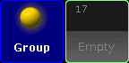
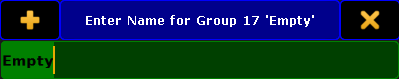
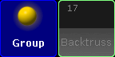
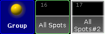

Manage pool objects
The following examples explains on the group pool how to manage and organize pool objects in pools. These examples are valid for all pool objects.
Every of the following actions is oopsable. For more information see oops and undo .
Store new empty pool objects
Empty pool objects are useful for preprogramming and to fill them later with content in the venue. You can also use them to organize the pool as a label for the following pool objects.
Requirement: Open groups pool .
To store new empty pool objects:
Press Store and tap on an empty pool tile.
- or -
Press Store Group 17 Please .

Groups pool - empty pool object
An empty group pool object is stored in the group pool. An empty pool object is indicated by a gray font.
Hint:
You can also use the
Store command to store new empty pool objects.
Pool object numbers may also differ in color. For more information see Workspace - Colors - System .
Label pool objects
Clear and unique pool object labels will help you and other people running the show to keep organized.
Requirements:
To label pool objects:
Press Assign Assign (= Label) and tap at the to be labeled group object tile.Assign Assign (= Label) Group 17 Please .

Enter Name for Group pop-up
Use a keyboard or open the virtual keyboard by tapping at the plus Backtruss .
Press Please .

Group pool - labeled empty pool object
The group is labeled as Backtruss.
Move pool objects
Requirements:
To move pool objects around in a pool:
Press Move , tap at the to be moved pool object and then tap at the new pool object place.
- or -
Press Move Group 17 At 18 Please .
If the destination of the pool object is already taken the pool objects will switch the places.
The group pool object is moved.
Hint:
You can also use the
Move command to move pool objects.
Copy pool objects
Requirements:
To copy pool objects in a pool:
Press Copy , tap at the to be copied pool object and then tap at the copied pool object destination.
- or -
Press Copy Group 16 At 17 Please .

Group pool - copied pool object
Group 16 is copied at group 17. The copied group is indicated by a #2 .
Hint:
You can also use the
Copy keyword to copy pool objects.
Edit pool objects
Restriction:
Requirements:
To edit pool objects:
Press Edit and tap at the to be edited pool object.
- or-
Press Edit Group 17 Please .
The respective edit mode or editor opens.
Hint:
You can also use the
Edit command to edit pool objects.
Insert pool objects
Requirements:
To insert an existing pool object between two other pool objects:
Press Move Move Move (= Insert) and tap and hold Group 8 and move by drag and drop at Group 2.
- or -
Press Move Move Move (= Insert) Group 8 At 2 Please
Group 8 is moved at Group 2. All other groups are moved to the next empty pool object.
Lock pool objects
Requirements:
To lock pool objects in a pool:
Type Lock in the command line and tap at the to be locked pool object tile.
Group 17 is locked. A locked pool object is indicated by a yellow lock .
Hint:
You can also use the
Lock keyword to lock pool objects.
Unlock pool objects
Important:
Requirements:
To unlock pool objects in a pool:
Type Unlock in the command line and tap at the to be unlocked pool object tile.
Group 17 is unlocked.
Hint:
Delete pool objects
Requirements:
To delete pool objects in a pool:
Press Del and tap the to be deleted pool object tile.
- or -
Press Del Group 17 Please .
- or -
Press and hold the Del and then tap several pool objects.
Group 17 is deleted.